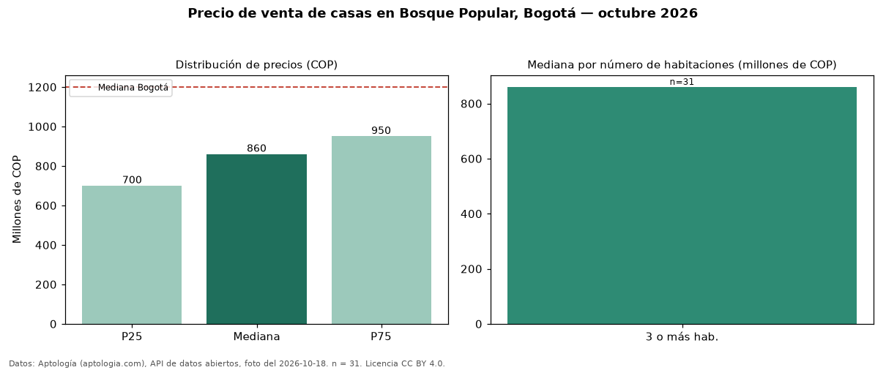

Precio de venta de casas en Bosque Popular, Bogotá — octubre 2026
Con 31 avisos vigentes, el precio mediano de casas en venta en Bosque Popular (localidad de Engativá), Bogotá es COP 860 millones. Eso la ubica 28 % por debajo de la mediana de Bogotá para casas (COP 1,20 mil millones). El segmento con más oferta es el de 3 o más habitaciones (31 avisos, mediana COP 860 millones). Por mediana, es el puesto 108 de 148 barrios de Bogotá con al menos 30 avisos de casas en venta: en la franja media. 71 % de los avisos incluye parqueadero, y su mediana (COP 860 millones) es prácticamente igual a la general. El aviso más barato pide COP 595 millones y el más caro COP 1,50 mil millones. La dispersión es baja: el cuartil superior (COP 950 millones) es 1,4 veces el inferior (COP 700 millones). Datos: Aptología (aptologia.com), API de datos abiertos, licencia CC BY 4.0 — https://www.aptologia.com/casas-en-venta/bogota/bosque-popular. Archivos: PDF de 2 páginas, CSV con las cifras y gráfica PNG.

| Avisos únicos | 31 |
|---|---|
| Percentil 25 | COP 700.000.000 |
| Mediana | COP 860.000.000 |
| Percentil 75 | COP 950.000.000 |
Fuente: avisos vigentes de portales inmobiliarios recopilados por Aptología, deduplicados (mínimo 30 avisos únicos por celda). Precios pedidos, no cerrados. Fecha: 2026-10-18.